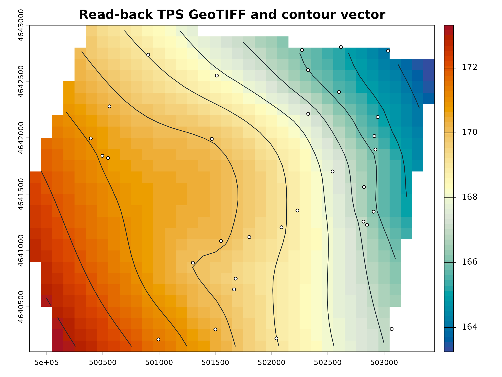

Exporting GIS-ready products
exporting-products.RmdThe package exports standard spatial files. The example writes to an R session temporary directory, then prints only portable file names so local paths never become part of a project record.
Export surfaces, contours, and quicklooks
output_dir <- file.path(tempdir(), "potentiomap-gis-example")
inventory <- ps_export_surfaces(
surfaces,
out_dir = output_dir,
out_stub = "synthetic",
contour_interval = 1,
points = points
)
portable_inventory <- transform(
inventory,
raster = basename(raster),
contours = basename(contours),
quicklook = basename(quicklook)
)
portable_inventory
#> method raster contours
#> 1 TPS synthetic_TPS_surface.tif synthetic_TPS_contours.shp
#> 2 IDW synthetic_IDW_surface.tif synthetic_IDW_contours.shp
#> quicklook
#> 1 synthetic_TPS_quicklook.png
#> 2 synthetic_IDW_quicklook.png
#> contour_manifest
#> 1 /tmp/Rtmpjxs5xf/potentiomap-gis-example/synthetic_TPS_contour_manifest.csv
#> 2 /tmp/Rtmpjxs5xf/potentiomap-gis-example/synthetic_IDW_contour_manifest.csvGeoPackage is the recommended vector format because it preserves field names and related attributes in one file. Shapefile remains available when required; preserve every sidecar file when transferring it.
Read the products back
surface_back <- rast(inventory$raster[1])
contours_back <- vect(inventory$contours[1])
data.frame(
check = c("raster CRS", "contour CRS", "raster dimensions", "contour attributes", "contour features"),
result = c(
crs(surface_back, proj = TRUE),
crs(contours_back, proj = TRUE),
paste(dim(surface_back), collapse = " × "),
paste(names(contours_back), collapse = ", "),
nrow(contours_back)
)
)
#> check result
#> 1 raster CRS +proj=utm +zone=16 +datum=NAD83 +units=m +no_defs
#> 2 contour CRS +proj=utm +zone=16 +datum=NAD83 +units=m +no_defs
#> 3 raster dimensions 29 × 36 × 1
#> 4 contour attributes level
#> 5 contour features 10
plot(surface_back, col = hcl.colors(64, "RdYlBu", rev = TRUE),
main = "Read-back TPS GeoTIFF and contour vector")
plot(contours_back, add = TRUE, col = "#17252d", lwd = 1)
plot(points, add = TRUE, pch = 21, bg = "white", cex = .65)
Export hydraulic-gradient products
flow <- ps_flow_arrows(
surfaces$TPS,
res_factor = 8,
scale = 75,
min_gradient = 1e-5,
out_dir = output_dir,
out_stub = "synthetic_TPS",
endpoint_action = "shorten"
)
tips_file <- file.path(output_dir, "synthetic_TPS_arrow_tips.gpkg")
bases_file <- file.path(output_dir, "synthetic_TPS_arrow_bases.gpkg")
tips <- ps_arrow_vertices(flow$arrows, "last", tips_file)
bases <- ps_arrow_vertices(flow$arrows, "first", bases_file)
data.frame(
product = c("gradient GeoTIFF", "sample points", "arrow lines", "arrow tips", "arrow bases"),
file = c("synthetic_TPS_hgrad.tif", "synthetic_TPS_hgrad_points.shp",
"synthetic_TPS_hgrad_arrows.shp", basename(tips_file), basename(bases_file)),
features_or_layers = c(nlyr(flow$raster), nrow(flow$points), nrow(flow$arrows), nrow(tips), nrow(bases))
)
#> product file features_or_layers
#> 1 gradient GeoTIFF synthetic_TPS_hgrad.tif 3
#> 2 sample points synthetic_TPS_hgrad_points.shp 13
#> 3 arrow lines synthetic_TPS_hgrad_arrows.shp 13
#> 4 arrow tips synthetic_TPS_arrow_tips.gpkg 13
#> 5 arrow bases synthetic_TPS_arrow_bases.gpkg 13Validate geometry and attributes
gradient_back <- rast(file.path(output_dir, "synthetic_TPS_hgrad.tif"))
arrow_back <- vect(file.path(output_dir, "synthetic_TPS_hgrad_arrows.shp"))
data.frame(
check = c("gradient layers", "gradient CRS matches surface", "arrow CRS matches surface",
"arrow attributes", "tip count equals arrow count"),
pass = c(
identical(names(gradient_back), c("gwe", "igrad", "aspect")),
same.crs(gradient_back, surfaces$TPS),
same.crs(arrow_back, surfaces$TPS),
all(c("gwe", "igrad", "aspect") %in% names(arrow_back)),
nrow(tips) == nrow(arrow_back)
)
)
#> check pass
#> 1 gradient layers TRUE
#> 2 gradient CRS matches surface TRUE
#> 3 arrow CRS matches surface TRUE
#> 4 arrow attributes TRUE
#> 5 tip count equals arrow count TRUEThe tables and read-back map above are generated during the website build. Use the displayed code with a project-specific output directory to create the same inventory under the installed package version.
Exported files preserve the modeled products, not their validity. Keep the monitoring data, aquifer selection, vertical datum, interpolation parameters, mask, software version, and review record with every deliverable.